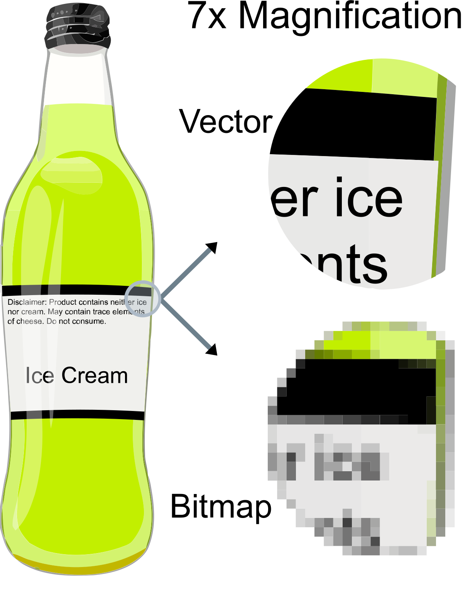
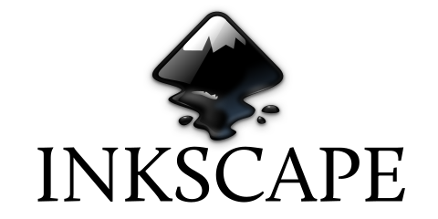

The Web
Categorie
Multimedia
Profiel Content Creator
tooling Tekenen vector based

Vector based tekenen is voor op computer vector afbeeldingen aanmaken en bewerken en deze kunnen opslaan in een van de vele populaire vectorbestand formaten, zoals EPS, pdf, WMF, SVG, or VML.
→ zie: Wikipedia Tekenen vector based
Programma's voor vector afbeeldingen worden vaak tegenover programma's voor raster afbeeldingen gezet, en hun mogelijkheden vullen elkaar aan. Programma's voor vector afbeeldingen zijn beter voor grafische vormgeving, pagina indeling, typografie, logo's, scherpe artistieke illustraties, bijvoorbeeld cartoons, clip art, complexe geometrische patronen, technische illustraties, diagrammen en stroomdiagrammen.
Programma's voor raster afbeeldingen zijn meer geschikt voor het retoucheren, fotobewerking, foto-realistische illustraties, collage en met de hand getekend illustraties met behulp van een grafisch tablet.
→ zie: tooling Beeldbewerking
Tekenen vector based kenmerken
De minimale hoeveelheid informatie vertaalt zich in een veel kleinere bestandsgrootte in vergelijking met grote rasterafbeeldingen (de grootte van de weergave is niet afhankelijk van de afmetingen van het object), hoewel vaak wordt gezegd dat een vectorafbeelding met een kleine bestandsgrootte ontbreken details in vergelijking met een echte wereldfoto
Dienovereenkomstig kan men oneindig inzoomen op bijvoorbeeld een cirkelboog en blijft deze soepel. Aan de andere kant zal een veelhoek die een curve vertegenwoordigt onthullen dat deze niet echt gebogen is
Bij het inzoomen hoeven lijnen en curven niet proportioneel breder te worden. Vaak wordt de breedte niet vergroot of kleiner dan proportioneel. Aan de andere kant kunnen onregelmatige krommen die worden voorgesteld door eenvoudige geometrische vormen verhoudingsgewijs breder worden gemaakt bij het inzoomen, om ze er glad uit te laten zien en niet zoals deze geometrische vormen
De parameters van objecten worden opgeslagen en kunnen later worden gewijzigd. Dit betekent dat verplaatsen, schalen, roteren, vullen enz. De kwaliteit van een tekening niet aantast. Bovendien is het gebruikelijk om de afmetingen in apparaatonafhankelijke eenheden op te geven, wat resulteert in de best mogelijke rastering op rasterapparaten
Vanuit een 3D-perspectief is het weergeven van schaduwen ook veel realistischer met vectorafbeeldingen, omdat schaduwen kunnen worden geabstraheerd in de lichtstralen waaruit ze worden gevormd. Dit maakt fotorealistische afbeeldingen en renderings mogelijk
- Tooling voor Tekenen vector based
-
Alternatieve niét FOSS tooling is Adobe Illustrator geschikt voor Windows, macOS (betaald), Affinity Designer geschikt voor Windows, macOS, iOS (betaald), CorelDRAW Graphics Suite geschikt voor Windows (betaald), Magix Xara Photo & Graphics Designer geschikt voor Windows (betaald), Sketch 52 geschikt voor macOS (betaald), Autodesk Graphic geschikt voor macOS (betaald), Vectr is Web Based dus geschikt voor alle OS'n (free), Wél FOSS is:
- Inkscape
-
 Inkscape is een free open source vectorafbeeldingen editor. Deze software kan worden gebruikt om vectorafbeeldingen zoals illustraties, diagrammen, lijntekeningen, grafieken, logo's en complexe schilderijen te maken of te bewerken. Het primaire vector grafische formaat van Inkscape is Scalable Vector Graphics (SVG); er kunnen echter veel andere indelingen worden geïmporteerd en geëxporteerd.
→ zie: Website Inkscape tbv download - Kenmerken
-
Inkscape kan primitieve vectorvormen (bijvoorbeeld rechthoeken, ellipsen, polygonen, bogen, spiralen, sterren en 3D-kaders) en tekst weergeven. Deze objecten kunnen worden gevuld met effen kleuren, patronen, radiale of lineaire kleurgradiënten en hun randen kunnen worden gestreept, beide met instelbare transparantie. Inbedden en optioneel traceren van rasterafbeeldingen wordt ook ondersteund, waardoor de editor vectorafbeeldingen van foto's en andere rasterbronnen kan maken. Gemaakte vormen kunnen verder worden gemanipuleerd met transformaties, zoals verplaatsen, roteren, schalen en scheeftrekken. Kenmerken:
- Object maken
- Objectmanipulatie
- Objecten stileren
- Bewerkingen op paden
- Prestatievoorkeuren optie
- Opstartprestaties
- Tekstondersteuning
- Renderen
- Bestandsindelingen